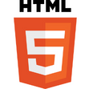
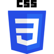
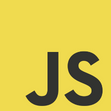
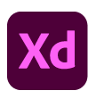
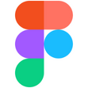
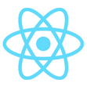
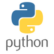

Hoje estou voltado em tecnologias para Front-end. Também gosto de "Brincar" com designer no Figma criando interfaces para Projectos pessoais e de Clientes.
HTML é uma linguagem de marcação utilizada na construção de páginas na Web. Documentos HTML podem ser interpretados por navegadores. A tecnologia é fruto da junção entre os padrões HyTime e SGML. HyTime é um padrão para a representação estruturada de hipermídia e conteúdo baseado em tempo. 
Cascading Style Sheets (abreviado CSS) é um mecanismo para adicionar estilos (cores, fontes, espaçamento, etc.) a uma página web, aplicado diretamente nas tags HTML ou ficar contido dentro das tags style. Também é possível, adicionar estilos adicionando um link para um arquivo CSS que contém os estilos. Assim, quando se quiser alterar a aparência dos documentos vinculados a este arquivo CSS. 
JavaScript é uma linguagem de programação interpretada estruturada, de script em alto nível com tipagem dinâmica fraca e multiparadigma. Juntamente com HTML e CSS, o JavaScript é uma das três principais tecnologias da World Wide Web.. 
Adobe XD é uma ferramenta de design de experiência do usuário baseada em vetores para aplicativos da web e aplicativos móveis, desenvolvida e publicada pela Adobe Inc. Ele está disponível para macOS e Windows, embora existam versões para iOS e Android para ajudar a visualizar o resultado do trabalho diretamente em dispositivos móveis. O Adobe XD suporta wireframes de sites e criação de protótipos click-through.. 
GitHub é uma plataforma de hospedagem de código-fonte e arquivos com controle de versão usando o Git. Ele permite que programadores, utilitários ou qualquer usuário cadastrado na plataforma contribuam em projetos privados e/ou Open Source de qualquer lugar do mundo. GitHub é amplamente utilizado por programadores para divulgação de seus trabalhos ou para que outros programadores contribuam com o projeto, além de promover fácil comunicação através de recursos que relatam problemas ou misturam repositórios remotos (issues, pull request).
Figma é um editor gráfico de vetor e prototipagem de projetos de design baseado principalmente no navegador web, com ferramentas offline adicionais para aplicações desktop para GNU/Linux, macOS e Windows. O aplicativo Figma Mirror é um sistema de prototipagem que espelha o que está sendo feito no computador para o smartphone Android e/ou iOS, permitindo a simulação do vetor criado no computador como um aplicativo ou página da web. . 
ReactJS é uma biblioteca front-end JavaScript de código aberto com foco em criar interfaces de usuário em páginas web. Criado em 2011 pelo Facebook, com a criação de views declarativas e baseando-se em componentes, possuía o intuito de otimizar a atualização e a sincronização de atividades simultâneas no feed de notícias da rede social e melhorar a manutenção de código.. 
Python é uma linguagem de programação de alto nível, interpretada de script, imperativa, orientada a objetos, funcional, de tipagem dinâmica e forte. Foi lançada por Guido van Rossum em 1991. Actualmente, possui um modelo de desenvolvimento comunitário, aberto e gerenciado pela organização sem fins lucrativos Python Software Foundation.. 